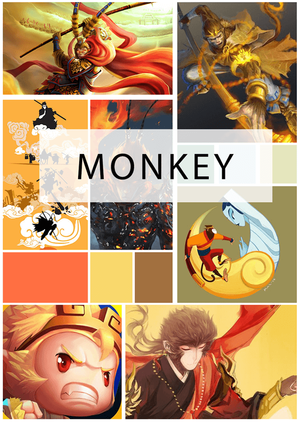
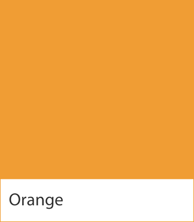

Monkey app UI design
UX part
使用人群
专业操作人员，程序员，绝大多数为男性
用户需求
可以快速找到自己的SDK（选项），界面简洁好用；此外，客户还提出一个需求：想要有一些齐天大圣的元素。
1 | 思考一下，客户为什么想要一个“齐天大圣的元素”？这让我首先想起了孙悟空。 |
使用场景
需要进行选择SDK，于是掏出手机打开app进行点选。
设计目标
设计的目标在于，尽可能让使用者觉得方便易用，不干扰到用户。
Visual language
通过上述分析，我们可以很直观的发现这个app需要这么一种感觉：轻松/灵动/机灵/靠谱，就像一个聪明的小孩，无论我想要什么操作，都可以准确及时的达成。所以接下来从这么几点开始细化这种感觉。
空间
排版方面，可以稍微轻松开阔一些，清晰即可。不必太紧致（展示的内容并不是很多）。
颜色
首先是主色调，对于一款工具类的产品来说，首先应该是好用，那么结合专业工具的属性，就应该使用一种比较冷静，看起来不易犯错的颜色。所以，我决定把logo中的蓝色提取出来，做成主色。
（这里有图片）
除了主色之外，我还使用了一个辅助颜色，考虑到是monkey，我做了一个情绪版：

通过mood board我可以确定，我们的主题色应该是橙色：
首先，这是monkey的固有颜色，符合客户的需求（齐天大圣）；其次，橙色有一种活力感，给用户一种使用起来不费力的感觉，比较灵巧。所以在这里选定橙色为主题色。

形状
一个给程序员使用的easy-to-use的工具，自然是越简单越好，所以我用了圆形的块面放上反白的icon。看起来简洁又不简单。
动画
紧凑型，及时响应，一种爽快的感觉，让人觉得灵动。
制作完成
视频：
在线链接：https://pro.modao.cc/app/fb823878b78376c5a693f73ebbe0a1f08a0cce15